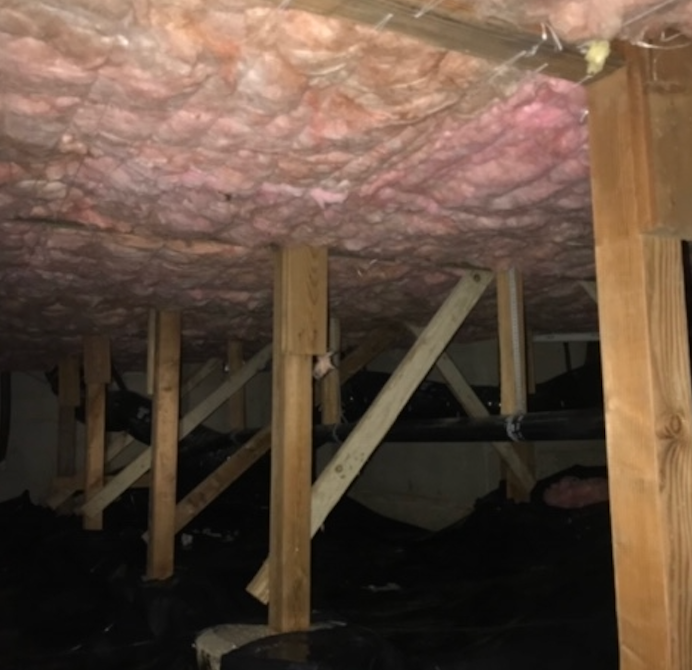
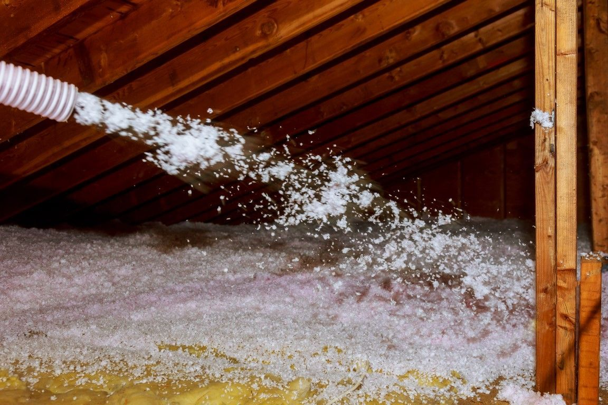
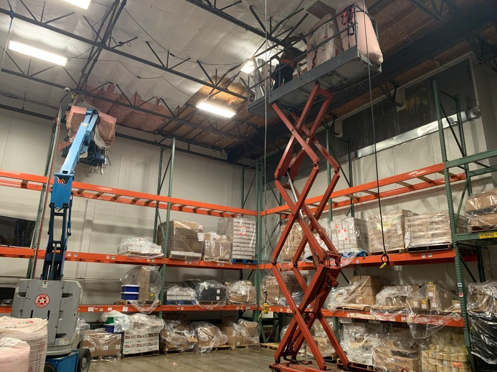
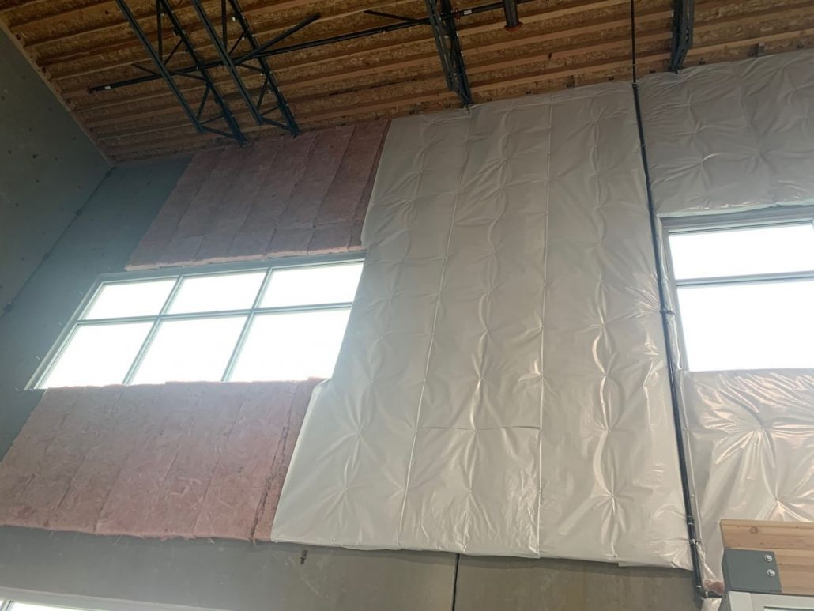

01
Attic Insulation
Keep conditioned air where it belongs with carefully installed attic insulation designed for Oregon homes.
Get an estimate →Serving Tigard & Greater Portland, Oregon
Built to protect.
Professional attic, crawl space, and blown-in insulation for a quieter, healthier, more energy-efficient home.
What We Do
Practical, high-quality solutions tailored to the way your property is built.
Keep conditioned air where it belongs with carefully installed attic insulation designed for Oregon homes.
Get an estimate →
Create a healthier, more comfortable home by protecting the space beneath your floors from damp and drafts.
Get an estimate →
Fill gaps and hard-to-reach areas with an efficient, even blanket of blown-in insulation.
Get an estimate →
Remove damaged, contaminated, or underperforming insulation before starting fresh with the right system.
Get an estimate →
Why Ulises Pro
We bring practical experience, careful installation, and a commitment to quality to every home. From the first assessment to the final walkthrough, you get a solution designed around your space—not a one-size-fits-all answer.
Service Area
Residential and commercial insulation services across the southwest Portland area.
Customer Stories
★★★★★“I had insulation batts put in the crawl space of my house. Ulises Pro Insulation LLC did the work. Jonathan's team showed up on time and were done in 3 hours. Great install!”
★★★★★“Ulises pro insulation really saved my day. I've been dealing with repairs from the February 2021 ice storm. The contracting company claimed the insulators were another 4-6 weeks out which would delay repairs even further. I gave him a call and he was able to come out within a few days and make it happen for me. His work passed the insulation inspection. He did a great job and had great customer service. I would highly recommend this company.”
★★★★★“Ulises Pro Insulation are simply the best. They not only did a great job installing insulation in our attic and crawling space but also air sealing both spaces. They were extremely professional, respectful of our home, and communicative. I have recommend them without hesitation to other friends and clients. Competitive pricing and amazing service. Save yourself the time and start with Ulises Pro Insulation, LLC.”
Good to Know
Still deciding what your home needs? Call us and tell us what you're noticing.
971-626-4112 →Common signs include uneven temperatures, high energy bills, drafts, or insulation that looks thin, old, or damaged. We can assess the space and recommend the right next step.
Proper attic insulation reduces heat loss in winter and heat gain in summer, helping your home feel more consistent while lowering heating and cooling demand.
Crawl space insulation can reduce cold floors, help control moisture, improve indoor comfort, and support better energy efficiency throughout the home.
Blown-in insulation is loose-fill material installed with specialized equipment. It settles around framing and obstructions to create thorough, continuous coverage.
Free Estimate
Share a few details and our local team will follow up to discuss the best way to improve your home's comfort and efficiency.